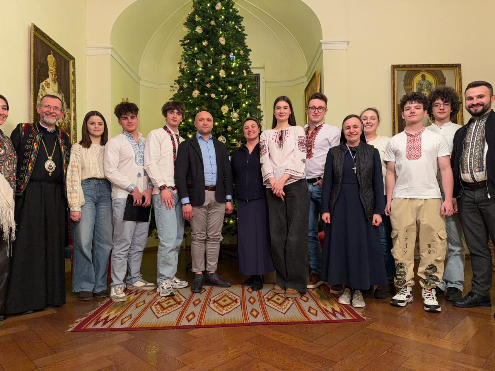
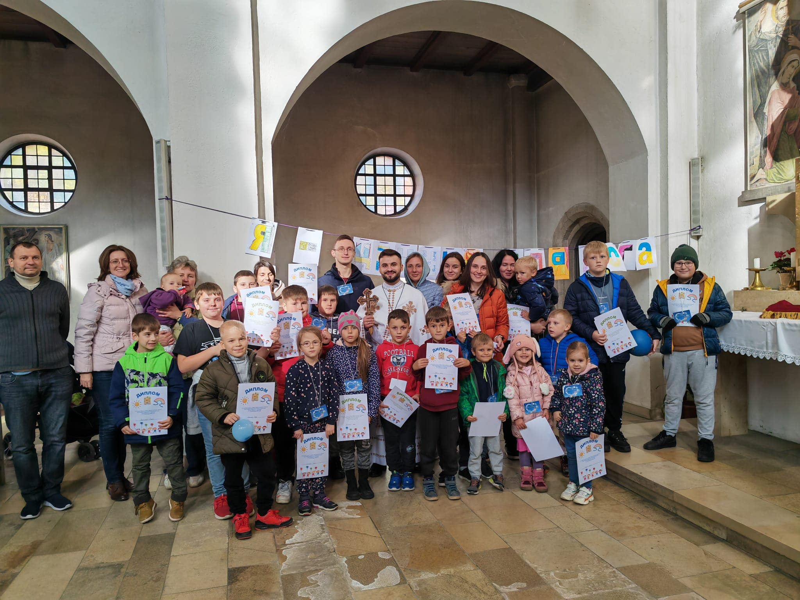
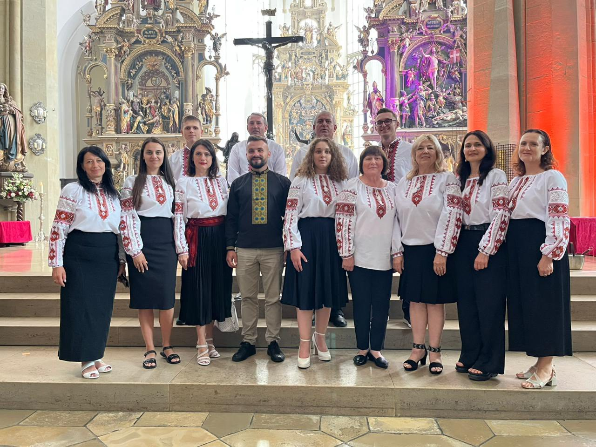
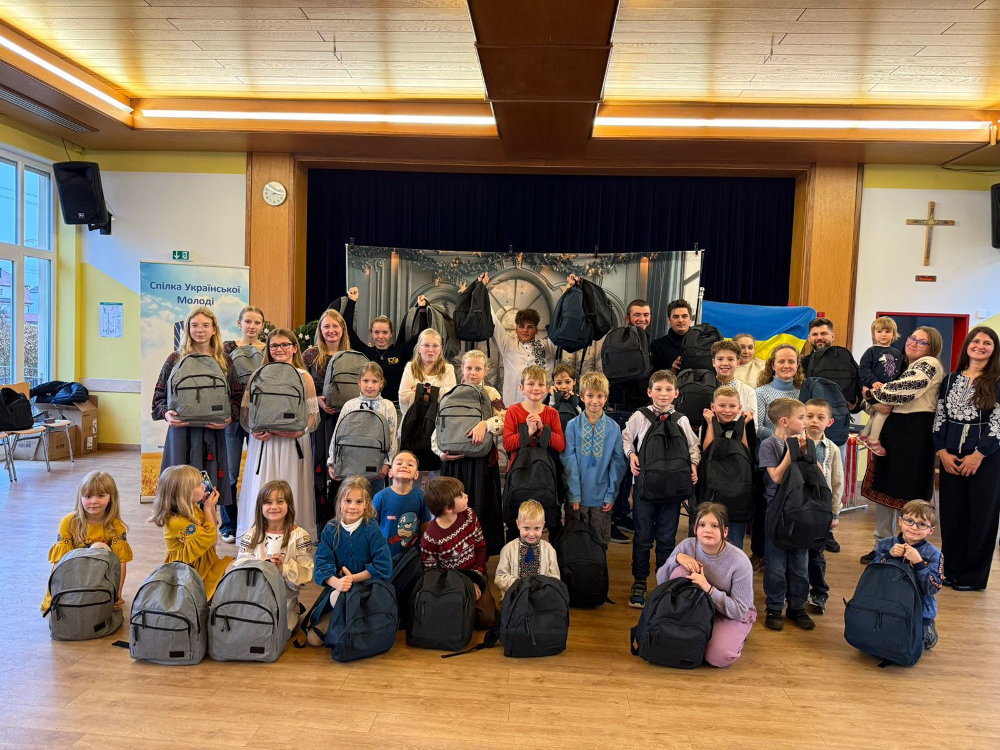

Молодіжна спільнота
Зустрічі молоді, спільні молитви, поїздки, підготовка до свят та цікаве спілкування.
Офіційний сайт Української Греко-Католицької Церкви
в місті Аугсбург
Ukrainische griechisch-katholische Kirchengemeinde in Augsburg — Gottesdienste und Gemeindeleben.

Зустрічі молоді, спільні молитви, поїздки, підготовка до свят та цікаве спілкування.

Підготовка дітей до Першої Сповіді та Урочистого Причастя, вивчення основ віри.

Наша співоча родина, яка супроводжує Богослужіння та бере участь у фестивалях.

Допомога Україні, підтримка ЗСУ та дітей, збір гуманітарної допомоги.